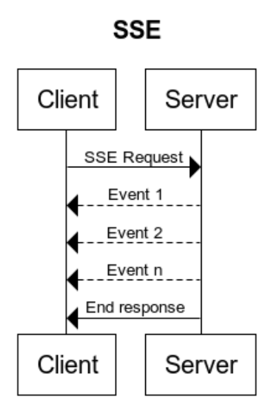

<!DOCTYPE html>
<html xmlns="http://www.w3.org/1999/xhtml" xml:lang="en-us" lang="en-us">
<head>
  <link href="//gmpg.org/xfn/11" rel="profile">
  <meta http-equiv="content-type" content="text/html; charset=utf-8">
  <meta name="generator" content="Hugo 0.80.0" />

  
  <meta name="viewport" content="width=device-width, initial-scale=1.0">

  <title>Server Sent Events (SSE) You Need to Know &middot; Ridha R</title>

  
  <link type="text/css" rel="stylesheet" href="https://ridhar.com/css/print.css" media="print">
  <link type="text/css" rel="stylesheet" href="https://ridhar.com/css/poole.css">
  <link type="text/css" rel="stylesheet" href="https://ridhar.com/css/syntax.css">
  <link type="text/css" rel="stylesheet" href="https://ridhar.com/css/hyde.css">
    <link rel="stylesheet" href="https://fonts.googleapis.com/css?family=Abril+Fatface|PT+Sans:400,400i,700">


  
  <link rel="apple-touch-icon-precomposed" sizes="144x144" href="/apple-touch-icon-144-precomposed.png">
  <link rel="shortcut icon" href="/favicon.png">

  
  <link href="" rel="alternate" type="application/rss+xml" title="Ridha R" />

  
</head>

  <body class=" ">
  <aside class="sidebar">
  <div class="container sidebar-sticky">
    <div class="sidebar-about">
      <a href="https://ridhar.com/">
        <h1>Ridha R</h1>
      </a>
      <p class="lead">
         blogs &amp; thoughts 
      </p>
    </div>
    <nav>
      <ul class="sidebar-nav">
        
        <li><a href="/about/"> About Me </a></li><li><a href="/ridhar-studio/"> Ridhar Studio </a></li>
      </ul>
    </nav>

    <nav>
      <div>Tags</div>
      <div style="display: flex;flex-wrap:wrap;">
         
        
        <div class="tagbutton" style="font-size: small; flex: 0 1 auto;margin-right: 8px;">
          <a href='/tags/clean-code/' title="All pages with tag clean-code">clean-code</a>
          
          (1)
        </div>
        
         
        
        <div class="tagbutton" style="font-size: small; flex: 0 1 auto;margin-right: 8px;">
          <a href='/tags/mysql/' title="All pages with tag mysql">mysql</a>
          
          (1)
        </div>
        
         
        
        <div class="tagbutton" style="font-size: small; flex: 0 1 auto;margin-right: 8px;">
          <a href='/tags/object-oriented/' title="All pages with tag object-oriented">object-oriented</a>
          
          (3)
        </div>
        
         
        
        <div class="tagbutton" style="font-size: small; flex: 0 1 auto;margin-right: 8px;">
          <a href='/tags/software-architecture/' title="All pages with tag software-architecture">software-architecture</a>
          
          (1)
        </div>
        
        
      </div>
    </nav>
    <br/>
    <p>
      &copy; 2021. All rights reserved. 
    </p>
</aside>
    <main class="content container">
    <div class="post">
  <h1>Server Sent Events (SSE) You Need to Know</h1>
  <time datetime=2021-02-13T05:52:13&#43;0700 class="post-date">Sat, Feb 13, 2021</time>
  <p>Server Sent Events (SSE) is like a common client-server HTTP request, instead of waiting for a response from the server, the client can get events during that time from the server.</p>
<p></p>
<p>SEE use when :</p>
<ul>
<li>While thinking implement WebSocket, (communication will happen bi-directionally) but client no need to sent an event to the server.</li>
<li>Want chunk response instead of waiting all process to be completed in one request</li>
</ul>
<p>When to don&rsquo;t use it</p>
<ul>
<li>Your client/browser is not compatible, check here for browser support <a href="https://developer.mozilla.org/en-US/docs/Web/API/Server-sent_events/Using_server-sent_events#browser_compatibility">https://developer.mozilla.org/en-US/docs/Web/API/Server-sent_events/Using_server-sent_events#browser_compatibility</a></li>
<li>The client needs to the sent event to the server, use WebSocket</li>
<li>SSE have limit connection per browser per domain, max 6 tab.</li>
</ul>
<p>SEE better to be used on these cases</p>
<ul>
<li>Uploading bulk data and FE display the progression.</li>
<li>Display dashboard data that need to re-fetch gradually.</li>
</ul>
<p>Caution use cases</p>
<ul>
<li>You need to update list of transactional data from transacation table
<ul>
<li>make sure you limit your, add proper index, and always monitor query time due to the data is getting bigger.</li>
</ul>
</li>
</ul>
<p>Refrences:</p>
<ul>
<li><a href="https://developer.mozilla.org/en-US/docs/Web/API/Server-sent_events/Using_server-sent_events">https://developer.mozilla.org/en-US/docs/Web/API/Server-sent_events/Using_server-sent_events</a></li>
</ul>

  <h3>Tags</h3>
  
      <a href="https://ridhar.com/tags/software-architecture/">software-architecture</a>
  
</div>
<h2>Comments</h2>
<div id="disqus_thread"></div>
<script type="application/javascript">
    var disqus_config = function () {
    
    
    
    };
    (function() {
        if (["localhost", "127.0.0.1"].indexOf(window.location.hostname) != -1) {
            document.getElementById('disqus_thread').innerHTML = 'Disqus comments not available by default when the website is previewed locally.';
            return;
        }
        var d = document, s = d.createElement('script'); s.async = true;
        s.src = '//' + "ridhar-com" + '.disqus.com/embed.js';
        s.setAttribute('data-timestamp', +new Date());
        (d.head || d.body).appendChild(s);
    })();
</script>
<noscript>Please enable JavaScript to view the <a href="https://disqus.com/?ref_noscript">comments powered by Disqus.</a></noscript>
<a href="https://disqus.com" class="dsq-brlink">comments powered by <span class="logo-disqus">Disqus</span></a>
    </main>

    
<script type="application/javascript">
var doNotTrack = false;
if (!doNotTrack) {
	window.ga=window.ga||function(){(ga.q=ga.q||[]).push(arguments)};ga.l=+new Date;
	ga('create', 'UA-128028156-1', 'auto');
	
	ga('send', 'pageview');
}
</script>
<script async src='https://www.google-analytics.com/analytics.js'></script>

  </body>
</html>
